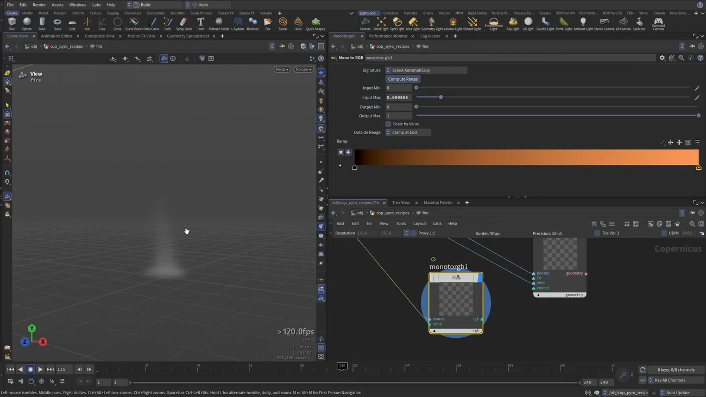

Copernicus で Pyro を作る — Pyro レシピと2Dへの落とし方
出典: Houdini 22 | How to Create Pyro in COPs | Configure Pyro Recipes （SideFX 公式「Houdini 22 How-To」の1本 / Houdini 22 / 14:36 / 英語）。 このページは、上記の動画を見ながら自分用にまとめた日本語の学習メモです。SideFX 公式の翻訳ではありません。
まず前提
レシピは COP Pyro Block 2.0 を使います。 2.0 ではソルバの主要コントロールが全部 Block End ノードに載り、 dissipation / disturbance / buoyancy といった標準的な機能のために ブロックの内側へノードを置く必要がなくなりました。
SOP の Pyro を触ったことがあれば、そのままの感覚で読めます。
1. Billowy Smoke を置く
/objで COP Network を作ります （これがジオメトリオブジェクトとして複数の COP ネットを抱える器になります）。cop_pyro_recipesと命名- 中に入って煙用の COP ネットを作り
smokeと命名。さらに中へ Tab→pyro configと打つと、 Pyro Configure Fire / Fireballs / Candle Flame / Cigarette Smoke などのレシピ一覧が出ます- Billowy Smoke を配置すると関連ノードが一式まとめて置かれます
Pyro Configure 単体はデータ整形用のヘルパーです。レシピの一部として使われます。 グリッド表示をオンにし、背景をダークグレーに変えると見やすくなります。
Block Begin は End へのポインタ
入力はすべて Begin に差し、設定は End 側で行います。
Block End に bounds / collisions / sourcing（density・temperature・velocity）/ fields / forces がまとまっています。SOP・DOP の Pyro と同じ構成なので、 どこに何があるか探し直す必要はありません。
2. なぜ最後に2Dになるのか
出力側のノードが3Dボリュームを2Dにラスタライズします。 Copernicus は最終的に2Dの画像処理系なので、ここで次元を落とします。
| ノード | 役 |
|---|---|
| Light Ambient | 単体では見るものが出ませんが、ボリュームの色とライティングを調整するためのノードです |
| Rasterize Volume | 2D画像になります |
| RGBA to RGB | 末尾に足すとアルファ抜きで境界が見えて状況が分かりやすくなります （premultiply も切っておくとレンダーアーティファクトが出ません） |
Copernicus には組み込みのカメラオペレータがあります。 フラスタムの先端がレンダリング面で、3Dを2Dグリッドに潰しているのが図で見えます。
Copernicus には実際のライトが無いので、Ambient Light のノードで擬似的にライティングします。 Intensity と Density Scale を触ると内側と外側のコントラストが変わります。
3. Source Shape — implicit surface
Pyro Configure は voxel size などを決め、リファレンス VDB を出力します。 それが Pyro Block Begin の VDB Reference 入力に入ります。
Source Shape は新しい implicit surface ベースで、 sphere / torus / tube / box から選べます。SOP から持ち込んだ複雑な implicit surface も使えます。
implicit surface は「SDF を数式で表したもの」です。 数式で面を記述するので完全な形状が得られます。
Source Shape には density / temperature などのソーシング設定と transform、 さらに Distortion があります。 Distortion Amplitude を上げるとボリュームの縁が押し引きされ、アニメーションも付きます。
4. Fire レシピ
1階層上がって COP Network をもう1つ作り fire と命名。中で Pyro Configure Fire を配置します。
| Billowy Smoke との違い |
|---|
| Source Shape（ノイズを乗せたディスク）と Collision Shape（平面＝地面）が付きます |
| 入力は source points と collision points |
| 各フィールドに Scale by Noise があります。形を歪ませるだけでなくフィールドの値そのものにノイズを乗せられます |
再生すると色が出ない
ここが SOP の Pyro と違って戸惑うところです。 見えているのは density フィールドそのもので、 Pyro ソルバから出た時点では色として可視化されません。
temperature や velocity、flame といった個々のフィールドを切り替えて見ることはできますが、 それを色として見るには自分で組む必要があります。
色を作る
- 2Dラスタライズを見ます
- Ambient Light でライティングします
- Light Scatter でボリュームの内側に色を散らします （emission scale や density に基づきます）
- emission には通常 flame の出力を持ってきます
- ノード同士は light 出力 → light 入力で繋いでいけます
flame フィールドに少しブラーをかけて、発光が硬くなりすぎないようにしています。
5. 3Dのまま確認したいとき — VDB Visualize
ラスタライズする前に「3Dとして狙い通りか」を確かめたいことがあります。 そのときは VDB Visualize を使います。
| 入力 | 繋ぐもの |
|---|---|
| density | density フィールド |
| color | — |
| emit | flame フィールド |
| emission color | 下記参照 |
全部繋ぐ必要はありません。density だけでもラスタライズと同じような見え方になります。
Rasterize Volume に合わせるなら、この例では Density Scale 15 / Emission Scale 45 です。

白いままになるとき
ここまでやるとボリュームが真っ白になります。色情報が無いからです。
Mono to RGB を使います。入れるのは temperature です。 SOP や DOP の Pyro ワークフローでも、炎の色は temperature で制御しますので同じ考え方です。
Compute Range を押して範囲を実測に合わせ、ランプを黒から炎の色に設定します。 ランプの範囲を決めるときは、煙が育った後のフレームで Compute Range を押すほうが 実際の値域に合います。
この回のまとめ
- COP Pyro Block 2.0 では主要な設定が全部 Block End に載っています。ブロックの内側にノードを置く必要はありません
- 入力は Begin、設定は End です。Begin は End へのポインタです
- Block End の構成（bounds / collisions / sourcing / fields / forces）は SOP・DOP の Pyro と同じです
- Copernicus は2Dの画像処理系なので、最後に Rasterize Volume で次元を落とします
- 実際のライトが無いので Ambient Light と Light Scatter で擬似的にライティングします
- Source Shape は implicit surface（数式で記述された面）です。Distortion Amplitude で縁を押し引きできます
- 各フィールドの Scale by Noise は、形ではなく値そのものにノイズを乗せます
- 色が出ないのは正常です。見えているのは density フィールドそのものです
- 3Dのまま確認したいときは VDB Visualize。density と emit（flame）を繋ぎます
- 白いままなら Mono to RGB に temperature を入れます。SOP / DOP と同じで、炎の色は temperature で作ります
同じ Copernicus で地形を作る回が Copernicus で地形を作るにあります。 そちらは Height Field COP Network の話で、canvas の設定が最初から入っているのが差分です。